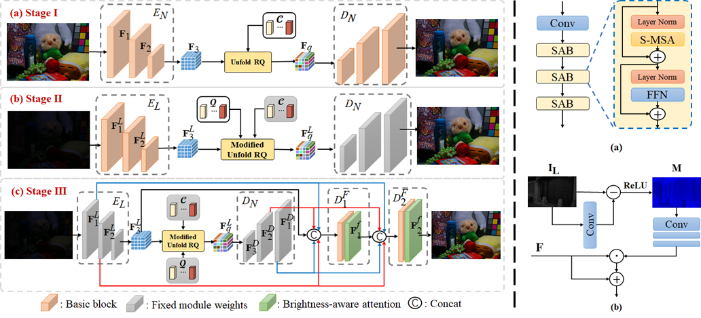
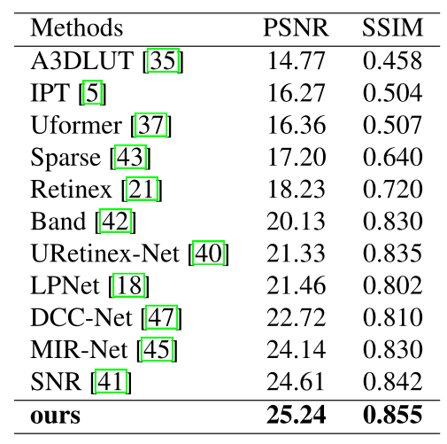
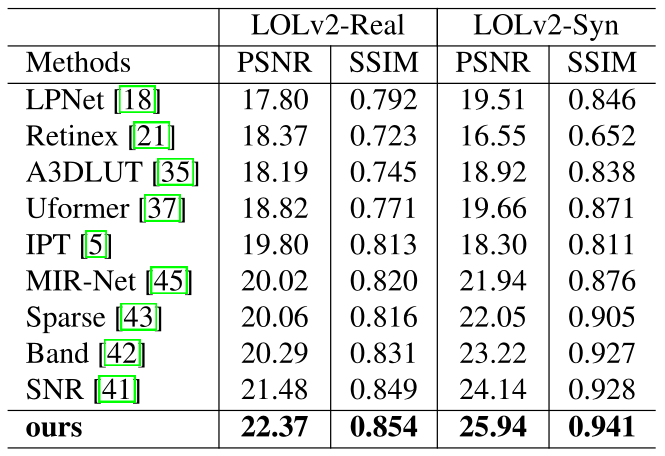
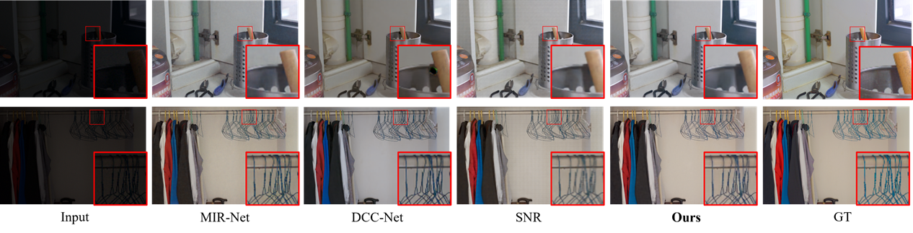
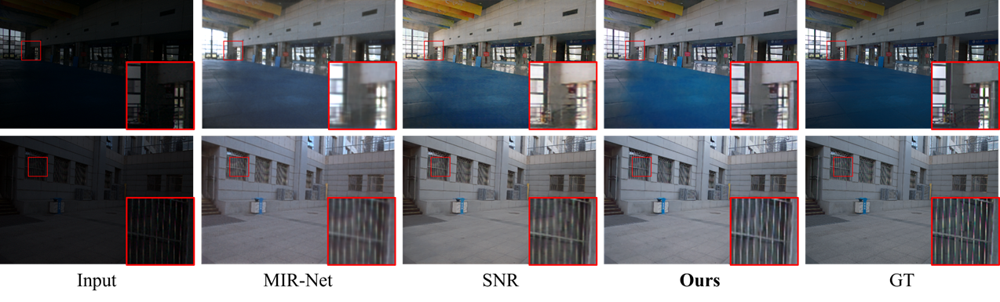
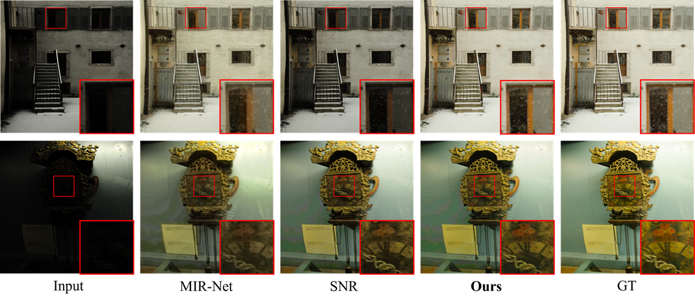

Low-Light
Image Enhancement with Multi-stage Residue Quantization and Brightness-aware
Attention
Yunlong Liu1,* Tao Huang1,* Weisheng Dong1,+ Fangfang Wu1 Xin Li2 Guangming Shi1
1School of Artificial
Intelligence, Xidian University
2University
at Albany

Figure 1. Architecture of the proposed network RQ-LLIE for low-light
image enhancement (LLIE). Left: The architecture of the overall network.
Right (a): The structure of the Basic block in the left
figure. Right (b): The structure of the Brightness-aware attention in the left
figure.
Abstract
Low-light
image enhancement (LLIE) aims to recover illumination and improve the
visibility of low-light images. Conventional LLIE methods often produce poor
results because they neglect the effect of noise interference. Deep
learning-based LLIE methods focus on learning a mapping function between low-light
images and normal-light images that outperforms conventional LLIE methods.
However, most deep learning-based LLIE methods cannot yet fully exploit the
guidance of auxiliary priors provided by normal-light images in the training
dataset. In this paper, we propose a brightness-aware network with normal-light
priors based on brightness-aware attention and residual quantized codebook. To
achieve a more natural and realistic enhancement, we design a query module to
obtain more reliable normal-light features and fuse them with lowlight features
by a fusion branch. In addition, we propose a brightness-aware attention module
to further retain the color consistency between the enhanced results and the
normal-light images. Extensive experimental results on both real-captured and
synthetic data show that our method outperforms existing state-of-the-art
methods.

Citation
Liu
Y, Huang T, Dong W, et al. Low-Light Image Enhancement with Multi-Stage Residue
Quantization and Brightness-Aware Attention[C]//Proceedings of the IEEE/CVF
International Conference on Computer Vision. 2023: 12140-12149.
Bibtex
@InProceedings{Liu_2023_ICCV,
author = {Liu, Yunlong and Huang,
Tao and Dong, Weisheng and Wu, Fangfang and Li, Xin
and Shi, Guangming},
title = {Low-Light Image
Enhancement with Multi-Stage Residue Quantization and Brightness-Aware
Attention},
booktitle
= {Proceedings of the IEEE/CVF International Conference on Computer Vision
(ICCV)},
month = {October},
year = {2023},
pages = {12140-12149}
}
Download

Results
Comparison with State-of-the-art Reconstruction
Methods:
Table 1. Quantitative comparison on the
LOLv1 dataset.

Table 2. Quantitative comparison on the
LOLv2-Real and LOLv2-Synthetic dataset.


Figure
2. Visual quality comparisons of different low-light image enhancement methods
on the LOLv1 dataset.

Figure 3. Visual quality comparisons of different low-light image
enhancement methods on the LOLv2-Real dataset.

Figure
4. Visual quality comparisons of different low-light image enhancement methods
on the LOLv2-Synthetic dataset.
References
[1]
Y uanhao Cai, Jing Lin, Xiaowan
Hu, Haoqian Wang, Xin Yuan, Y ulun
Zhang, Radu Timofte, and Luc V an Gool. Mask-guided
spectral-wise transformer for efficient hyperspectral image reconstruction. In Proceedings of the IEEE/CVF
Conference on Computer Vision and Pattern Recognition, pages 17502®C17511, 2022.
[2]
Y uanhao Cai, Jing Lin, Zudi
Lin, Haoqian Wang, Yulun Zhang,
Hanspeter Pfister, Radu Timofte,
and Luc V an Gool. Mst++: Multi-stage
spectral-wise transformer for efficient
spectral
reconstruction. In Proceedings of the IEEE/CVF Conference on Computer Vision
and Pattern Recognition, pages 745®C755, 2022.
[3]
Kelvin CK Chan, Xintao Wang, Xiangyu
Xu, Jinwei Gu, and Chen Change Loy. Glean: Generative latent bank for
large-factor image super-resolution. In Proceedings of the IEEE/CVF conference
on computer vision and pattern recognition, pages 14245®C14254, 2021.
[4]
Chaofeng Chen, Xinyu Shi, Yipeng Qin, Xiaoming Li,
Xiaoguang Han, Tao Yang, and Shihui Guo. Real-world
blind super-resolution via feature matching with implicit high- resolution
priors. In Proceedings of the 30th ACM International Conference on Multimedia,
pages 1329®C1338, 2022.
[5]
Hanting Chen, Y unhe Wang, Tianyu Guo, Chang Xu, Yiping Deng, Zhenhua
Liu, Siwei Ma, Chunjing Xu,
Chao Xu, and Wen Gao. Pre-trained image processing transformer. In Proceedings
of the IEEE/CVF Conference on Computer Vision and Pattern Recognition, pages
12299®C12310, 2021.
[6]
Jiankang Deng, Jia Guo, Niannan
Xue, and Stefanos Zafeiriou.
Arcface: Additive angular margin loss for deep face
recognition. In Proceedings of the IEEE/CVF conference on computer vision and
pattern recognition, pages 4690®C4699, 2019.
[7]
Patrick Esser, Robin Rombach,
and Bjorn Ommer. Taming transformers for
high-resolution image synthesis. In Proceedings of the IEEE/CVF conference on
computer vision and pattern recognition, pages 12873®C12883, 2021.
[8]
Jun Fu, Jing Liu, Haijie Tian, Y ong
Li, Y ongjun Bao, Zhiwei Fang,
and Hanqing Lu. Dual attention network for scene
segmentation. In Proceedings of the IEEE/CVF conference on computer vision and
pattern recognition, pages 3146®C3154, 2019.
[9]
Xueyang Fu, Delu Zeng, Y ue
Huang, Xiao-Ping Zhang, and Xinghao Ding. A weighted
variational model for simultaneous reflectance and illumination estimation. In
Proceedings of the IEEE conference on computer vision and pattern recognition,
pages 2782®C2790, 2016.
[10]
Jinjin Gu, Y ujun Shen, and
Bolei Zhou. Image processing using multi-code gan prior. In Proceedings of the IEEE/CVF conference on
computer vision and pattern recognition, pages 3012®C3021, 2020.
[11]
Y uchao Gu, Xintao Wang, Liangbin Xie, Chao Dong, Gen Li,
Ying Shan, and Ming-Ming Cheng. Vqfr: Blind face restoration
with vector-quantized dictionary and parallel de-
coder.
In Computer Vision®CECCV 2022: 17th European Conference, Tel Aviv, Israel,
October 23®C27, 2022, Proceedings, Part XVIII, pages 126®C143. Springer, 2022.
[12]
Shih-Chia Huang, Fan-Chieh Cheng, and Yi-Sheng Chiu. Efficient
contrast enhancement using adaptive gamma correction with weighting
distribution. IEEE transactions on image processing, 22(3):1032®C1041, 2012.
[13]
Diederik P Kingma and Jimmy
Ba. Adam: A method for stochastic optimization. arXiv
preprint arXiv:1412.6980, 2014.
[14]
Edwin H Land. The retinex theory of color vision.
Scientific american, 237(6):108®C129, 1977.
[15]
Chulwoo Lee, Chul Lee, and
Chang-Su Kim.
Contrast enhancement based on layered difference representation of 2d
histograms. IEEE transactions on image processing, 22(12):5372®C5384, 2013.
[16]
Doyup Lee, Chiheon Kim, Saehoon Kim, Minsu Cho, and Wook-Shin Han. Autoregressive image generation using residual
quantization. In Proceedings of the IEEE/CVF Conference on Computer Vision and
Pattern Recognition, pages 11523®C11532, 2022.
[17]
Chongyi Li, Jichang Guo, Fatih Porikli, and Yanwei Pang. Lightennet: A
convolutional neural network for weakly illuminated image enhancement. Pattern
recognition letters, 104:15®C22, 2018.
[18]
Jiaqian Li, Juncheng Li,
Faming Fang, Fang Li, and Guixu Zhang.
Luminance-aware pyramid network for low-light image enhancement. IEEE
Transactions on Multimedia, 23:3153®C3165, 2020.
[19]
Mading Li, Jiaying Liu, Wenhan Yang, Xiaoyan Sun, and Zongming Guo. Structure-revealing low-light image
enhancement via robust retinex model. IEEE
Transactions on Image Processing, 27(6):2828®C2841, 2018.
[20]
Jingyun Liang, Jiezhang
Cao, Guolei Sun, Kai Zhang, Luc Van Gool, and Radu Timofte. Swinir: Image
restoration using swin transformer. In Proceedings of
the IEEE/CVF international conference on computer vision, pages 1833®C1844, 2021.
[21]
Risheng Liu, Long Ma, Jiaao
Zhang, Xin Fan, and Zhongxuan Luo. Retinex-inspired unrolling with cooperative prior architecture
search for low-light image enhancement. In Proceedings of the IEEE/CVF
Conference on Computer Vision and Pattern Recognition, pages 10561®C10570, 2021.
[22]
Sachit Menon, Alexandru
Damian, Shijia Hu, Nikhil Ravi, and Cynthia Rudin.
Pulse: Self-supervised photo upsampling via latent
space exploration of generative models. In Proceedings of the ieee/cvf conference on computer vision
and pattern recognition, pages 2437®C2445, 2020.
[23]
Adam Paszke, Sam Gross, Francisco Massa, Adam Lerer, James Bradbury, Gregory Chanan,
Trevor Killeen, Zeming Lin, Natalia Gimelshein, Luca Antiga, et al. Pytorch: An imperative style, high-performance deep
learning library. Advances in neural information processing systems, 32, 2019.
[24]
Jialun Peng, Dong Liu, Songcen
Xu, and Houqiang Li. Generating diverse structure for
image inpainting with hierarchical vq-vae. In
Proceedings of the IEEE/CVF Conference on Computer Vision and Pattern
Recognition, pages 10775®C10784, 2021.
[25]
Stephen M Pizer. Contrast-limited adaptive histogram equalization: Speed and
effectiveness stephen m. pizer, r. eugene johnston, james p. ericksen, bonnie c. yankaskas, keith e.muller medical image display
research group. In Proceedings of the first conference on visualization in
biomedical computing, Atlanta, Georgia, volume 337, page 1, 1990.
[26]
Stephen M Pizer, E Philip Amburn, John D Austin, Robert
Cromartie, Ari Geselowitz, Trey Greer, Bart ter Haar Romeny,
John B Zimmerman, and Karel Zuiderveld. Adaptive
histogram equalization and its variations. Computer vision, graphics, and image
processing, 39(3):355®C368, 1987.
[27]
Shanto Rahman, Md Mostafijur
Rahman, Mohammad Abdullah-Al-Wadud, Golam Dastegir Al-Quaderi, and Mohammad
Shoyaib. An adaptive gamma correction for image enhancement.
EURASIP Journal on Image and Video Processing, 2016(1):1®C13, 2016.
[28]
Zia-ur Rahman, Daniel J Jobson,
and Glenn A Woodell. Retinex
processing for automatic image enhancement. Journal of Electronic imaging,
13(1):100®C110, 2004.
[29]
Joseph Redmon, Santosh Divvala, Ross Girshick, and Ali Farhadi. Y ou
only look once: Unified, real-time object detection. In Proceedings of the IEEE
conference on computer vision and pattern recognition, pages 779®C788, 2016.
[30]
Shaoqing Ren, Kaiming He,
Ross Girshick, and Jian Sun. Faster r-cnn: Towards real-time object detection with region proposal
networks. Advances in neural information processing systems, 28, 2015.
[31]
Olaf Ronneberger, Philipp Fischer, and Thomas Brox. Unet: Convolutional
networks for biomedical image segmentation. In Medical Image Computing and
Computer-Assisted Intervention®CMICCAI 2015: 18th International Conference, Munich,
Germany, October 5-9, 2015, Proceedings, Part III 18, pages 234®C241. Springer,
2015.
[32]
Aaron V an Den Oord, Oriol Vinyals, et al. Neural
discrete representation learning. Advances in neural information processing
systems, 30, 2017.
[33]
Ziyu Wan, Bo Zhang, Dongdong
Chen, Pan Zhang, Dong Chen, Jing Liao, and Fang Wen. Bringing old photos back to
life. In proceedings of the
IEEE/CVF conference on computer vision and pattern recognition, pages
2747®C2757, 2020.
[34]
Ruixing Wang, Qing Zhang, Chi-Wing Fu, Xiaoyong Shen, Wei-Shi Zheng, and Jiaya
Jia. Underexposed photo enhancement using deep illumination estimation. In
Proceedings of the IEEE/CVF conference on computer vision and pattern recognition,
pages 6849®C6857, 2019.
[35]
Tao Wang, Y ong Li, Jingyang
Peng, Yipeng Ma, Xian Wang, Fenglong
Song, and Y ouliang Yan. Real-time image enhancer via
learnable spatial-aware 3d lookup tables.
In Proceedings of the IEEE/CVF International Conference on Computer
Vision, pages 2471®C2480, 2021.
[36]
Zhou Wang, Alan C Bovik, Hamid R Sheikh, and Eero P Simoncelli. Image quality
assessment: from error visibility to structural similarity. IEEE transactions
on image processing, 13(4):600®C612, 2004.
[37]
Zhendong Wang, Xiaodong Cun, Jianmin Bao, Wengang Zhou, Jianzhuang Liu, and
Houqiang Li. Uformer: A
general u-shaped transformer for image restoration. In Proceedings of the
IEEE/CVF Conference on Computer Vision and Pattern Recognition, pages
17683®C17693, 2022.
[38]
Zhouxia Wang, Jiawei Zhang, Runjian
Chen, Wenping Wang, and Ping Luo. Restoreformer:
High-quality blind face restoration from undegraded key-value pairs. In
Proceedings of the IEEE/CVF Conference on Computer Vision and Pattern
Recognition, pages 17512®C17521, 2022.
[39]
Chen Wei, Wenjing Wang, Wenhan Yang, and Jiaying Liu. Deep retinex
decomposition for low-light enhancement. arXiv
preprint arXiv:1808.04560, 2018.
[40]
Wenhui Wu, Jian Weng, Pingping
Zhang, Xu Wang, Wenhan Yang, and Jianmin
Jiang. Uretinex-net: Retinex-based
deep unfolding network for low-light image enhancement. In Proceedings of the
IEEE/CVF Conference on Computer Vision and Pattern Recognition, pages
5901®C5910, 2022.
[41]
Xiaogang Xu, Ruixing Wang,
Chi-Wing Fu, and Jiaya Jia. Snr-aware low-light image
enhancement. In Proceedings of the IEEE/CVF Conference on Computer Vision and
Pattern Recognition, pages 17714®C17724, 2022.
[42]
Wenhan Yang, Shiqi Wang, Y uming Fang, Y ue Wang, and Jiaying Liu. Band representation-based semi-supervised
low-light image enhancement: Bridging the gap between signal fidelity and
perceptual quality. IEEE Transactions on Image Processing, 30:3461®C3473, 2021.
[43]
Wenhan Yang, Wenjing Wang, Haofeng
Huang, Shiqi Wang, and Jiaying
Liu. Sparse gradient regularized deep retinex network
for robust low-light image enhancement. IEEE Transactions on Image Processing,
30:2072®C2086, 2021.
[44]
Syed Waqas Zamir, Aditya Arora, Salman Khan, Munawar Hayat, Fahad Shahbaz Khan,
and Ming-Hsuan Yang. Restormer:
Efficient transformer for high-resolution image restoration. In Proceedings of
the IEEE/CVF Conference on Computer Vision and Pattern Recognition, pages
5728®C5739, 2022.
[45]
Syed Waqas Zamir, Aditya Arora, Salman Khan, Munawar Hayat, Fahad Shahbaz Khan,
Ming-Hsuan Yang, and Ling Shao. Learning enriched
features for real image restoration and enhancement. In Computer Vision®CECCV
2020: 16th European Conference, Glasgow, UK, August 23®C28, 2020, Proceedings,
Part XXV 16, pages 492®C511. Springer, 2020.
[46]
Hui Zeng, Jianrui Cai, Lida
Li, Zisheng Cao, and Lei Zhang. Learning image-adaptive
3d lookup tables for high performance photo enhancement in real-time. IEEE
Transactions
on
Pattern Analysis and Machine Intelligence, 44(4):2058®C2073, 2020.
[47]
Zhao Zhang, Huan Zheng, Richang Hong, Mingliang Xu, Shuicheng Yan, and
Meng Wang. Deep color consistent net- work for low-light image enhancement. In
Proceedings of
the
IEEE/CVF Conference on Computer Vision and Pattern Recognition, pages
1899®C1908, 2022.
[48]
Shangchen Zhou, Kelvin CK Chan, Chongyi
Li, and Chen Change Loy. Towards
robust blind face restoration with codebook lookup transformer. arXiv preprint arXiv:2206.11253, 2022.
Contact
Yunlong Liu, Email: liuyunlong@stu.xidian.edu.cn
Tao Huang, Email: thuang_666@stu.xidian.edu.cn
Weisheng Dong, Email: wsdong@mail.xidian.edu.cn
Fangfang Wu, Email: wufangfang@xidian.edu.cn
Xin Li, Email: xli48@albany.edu
Guangming Shi, Email: gmshi
xidian@163.com